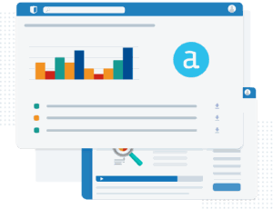

Low and no-code software is testing the limits of IT handholding. IT departments must continually intervene to clean up messes, while business users may need help managing their software. There’s no stopping the wave of low-code and no-code activities sweeping many companies — used by data citizens and professionals. The capabilities delivered by these tools keep expanding. It’s only a question of how deep and wide low and no-code development can go in the enterprise — whether it’s still more suitable for smaller, less-scalable applications or is ready for a greater enterprise reach.
Gartner says low-code / no-code tools are already enterprise-ready, where outside of IT departments, other users will account for at least 80% of the low-code tools – up from 60% in 2021!
Some of the limitations of low code, no code technologies are templates run the show, it is not an easy learning curve, there is limited security, they’re never cheap nor scalable, integrations are complex, and there is never good eLearning or training providing for upskilling. This adoption – or lack thereof – is no different for Corporate Departments and, namely, Finance teams. For example, the role of the financiers has shifted quite dramatically from an Excel-only based analyst reporting to low code / no code data visuals and analytical tools such as Alteryx, Tableau and PowerBI. What training has been provided? Sometimes none. IT has secured the budgets, e.g. full Microsoft 365 suite, the CFO thinks it’s a good idea / approves and then what happens is the newly acquired software is exposed to users with little to no training who aren’t overly technically savvy, and these licenses soon become latent or “shelfware” (i.e., underutilized, expensive software sitting on an organization IT tech-stack).
According to Gartner, at any point in time, IT operations may be running with 25% plus of software going unused.
The problem is that only 40% of organizations implementing low code / no code tools “achieve full-scale end-user adoption”, CSO Insights found.
In monetary terms, if a company pays for 50 Alteryx licenses for their Finance teams * $5k per license = $250k. If the take up of these licenses goes unused, that is a lot of costs sitting on an IT real estate.
This is where Kubicle can help and partner with these vendors like Alteryx and Tableau to address his very issue. With Alteryx, for example, Kubicle learners are taught how to build custom data workflows using Alteryx in their own time, using our unique bite-sized learning format. Our 100% online, CPE, and CPD-accredited Alteryx training covers everything from entry-level skills to the advanced techniques to succeed.
Why Learn Alteryx with Kubicle?

Alteryx is a powerful data transformation and analysis tool that empowers users to import, manipulate and analyze complex datasets. These courses will have you quickly up and running as an Alteryx user. We also have an applicability initiative called Projects. Projects are simulated business scenarios that test a learner’s capability to apply the concepts taught in a collection of Kubicle courses. Before practising newfound skills in the real world, they can do so in the safety of a sandbox environment.
At Kubicle, you can:
Earn Certificates
You can demonstrate your proficiency with current and potential employers by earning internationally-recognized certificates upon competition of your course exams.
Build Your Expertise and Confidence
When you decrease gaps in your decrease, you increase confidence. And when you enhance your ability, speed and accuracy, you increase your employability too.
Get Real World Experience
While diverse learners worldwide undertake our training, each shares a common ambition – to get the tools, knowledge and confidence to master the real world of work. For more information, visit: www.kubicle.com/library